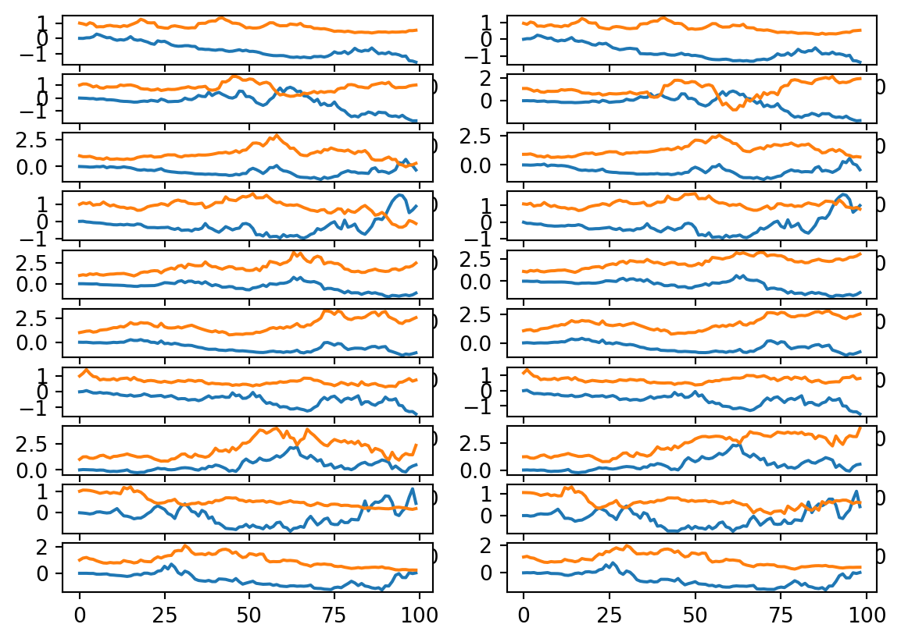

fig, axs = plt.subplots(10, 2)start, end, increments =0, 1, 100delta = (end - start)/incrementsbrownian_paths = [ twoD_brownian(increments, start=start, end=end) for _ inrange(10) ]for idx, b inenumerate(brownian_paths): X = [ b[0][i]**2+ b[1][i]**2-2*delta*i for i inrange(increments) ] Y = np.exp(b[0])*np.cos(b[1]) axs[idx, 0].plot(X) axs[idx, 0].plot(Y) X = np.cumsum([2*b[0][i]*(b[0][i+1] - b[0][i]) +2*b[1][i]*(b[1][i+1] - b[1][i]) for i inrange(increments -1)]) Y = np.cumsum([np.exp(b[0][i])*np.cos(b[0][i])*(b[0][i+1] - b[0][i]) - np.exp(b[1][i])*np.sin(b[1][i])*(b[1][i+1] - b[1][i]) for i inrange(increments -1) ])+1 axs[idx, 1].plot(X) axs[idx, 1].plot(Y)plt.show()

6.3 Dirichlet Problem
\[
h(x, y) = \begin{cases}
1 & \text{ if } x^2 + y ^2 = 1 \text{ and } y \geq 0, \\
-1 & \text{ if } x^2 + y^2 =1 \text { and } y < 0.
\end{cases}
\]
start_point = np.array([0, 1/2])def h(start, delta=1/100): pos = start.copy()for _ inrange(100): r = pos[0]**2+ pos[1]**2if r >=1:break pos += np.random.default_rng().normal(0, np.sqrt(delta), 2)return1if pos[1] >=0else-1np.average([h(start_point) for _ inrange(1000)])
np.float64(0.55)
n =200map= np.zeros([n, n])for i, x inenumerate(np.linspace(-1, 1, n)):for j, y inenumerate(np.linspace(-1, 1, n)):map[j, i] = np.average([h([x, y], delta=1/10) for _ inrange(100)])plt.imshow(map)